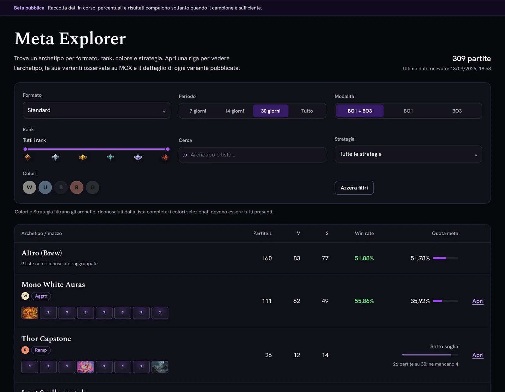

Schermate del sito con i dati pubblici del Meta: dall'Explorer all'archetipo, dall'archetipo alle sue varianti.
Meta
Filtra gli archetipi per formato, periodo, rank, colore e strategia. Da ogni archetipo apri le varianti osservate su MOX e, quando superano la soglia, la loro decklist.
Esplora il Meta